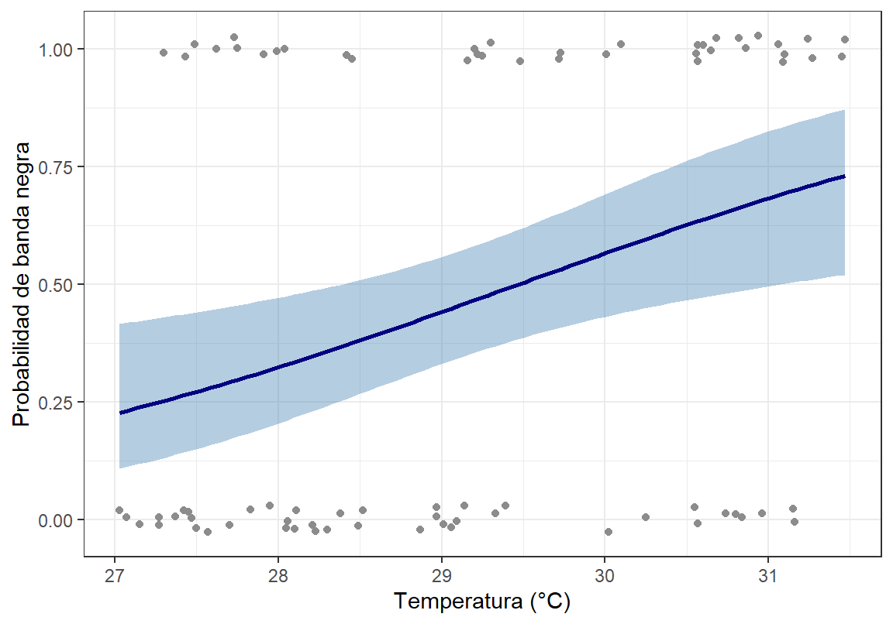
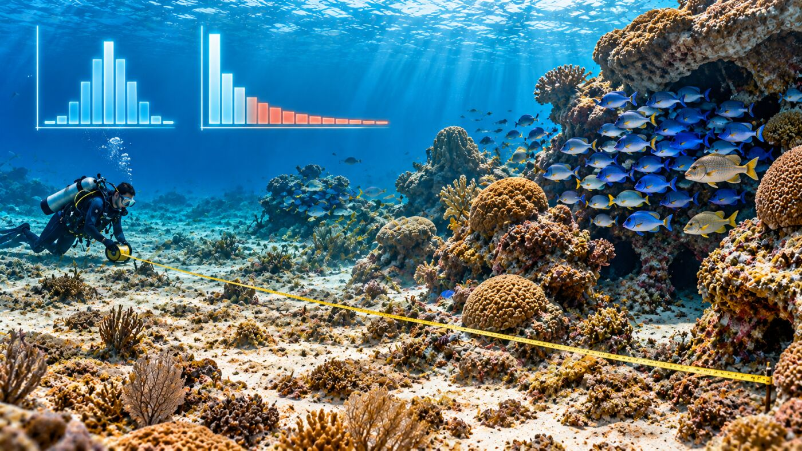
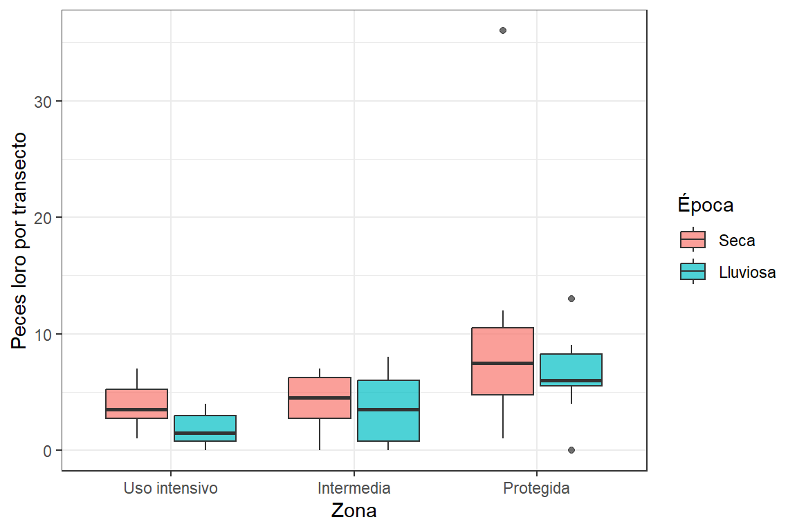

Taller 4. GLM Binomial y Poisson
Materiales requeridos para el taller en clase
En los siguientes enlaces se podrán descargar archivos comprimidos de los talleres donde se pueden aplicar procedimientos para los modelos de regresión lineal generalizada - GLM, con datos simulados en ecosistemas del Caribe colombiano (📰 Taller 4. Regresión lineal generalizada).
Nota: una vez se descarguen los materiales, se requiere descomprimirlos antes de realizar cualquier procedimiento y seguir las orientaciones del docente para realizar los ejercicios requeridos.
Diapositivas en vivo - Slides.com

Objetivos del taller
Este taller acompaña la sesión de diapositivas “Modelos Lineales Generalizados (GLM)” (RA1, RA2) del sábado en la tarde de la Semana 2. Al terminar, se podrá:
- Elegir la familia adecuada según el tipo de variable respuesta.
- Ajustar e interpretar un GLM binomial (enlace logit, odds ratio, prueba de razón de verosimilitud).
- Ajustar e interpretar un GLM Poisson (enlace log, razón de tasas).
- Comparar conteos entre sitios y épocas, diagnosticar sobredispersión (φ) y corregirla con la binomial negativa.
Se usan los mismos tres ejemplos de las diapositivas, con las mismas semillas, de modo que los resultados coinciden con los que aparecen en ellas.
TipNúcleo y material complementario
Este taller cubre lo esencial para la sesión. Los temas que amplían el análisis (proporciones, centrado de predictores, intervalos construidos a mano, cuasi-Poisson en detalle, comparaciones por pares, offset y el estudio de caso de la tortuga caguama) están en el Material complementario, para consultarlos cuando el propio proyecto los requiera.
Nota
Los datos siguen siendo simulados con set.seed() fijando la semilla en cada sección. Construidos para ilustrar cada modelo con claridad, no para representar mediciones reales.
Código
# Librerías requeridas
library(tidyverse)
library(ggplot2)
library(kableExtra)
# La binomial negativa se ajusta con MASS::glm.nb(). Se llama con el prefijo
# MASS:: para no cargar el paquete, que enmascara dplyr::select()Antes de empezar: ¿qué es un GLM?
Un Modelo Lineal Generalizado tiene tres componentes:
- Componente aleatorio: la distribución de la variable respuesta dentro de la familia exponencial. La varianza queda ligada a la media: binomial Var = np(1 − p); Poisson Var = μ.
- Componente sistemático: el predictor lineal \(\eta = \beta_0 + \beta_1X_1 + \dots\), igual que en
lm(). - Función de enlace \(g(\mu)\): conecta la media esperada con el predictor lineal, \(\eta = g(\mu)\).
NotaNo es lo mismo que transformar Y
Transformar log(Y) antes de un lm() altera cada observación y falla con los ceros (log 0 = −∞), lo que obliga a recursos como log(Y + 1). En un GLM, la función de enlace actúa sobre el valor esperado \(\mu\) y no sobre los datos: la varianza se modela en su escala real.
| Tipo de variable respuesta | Familia | Enlace | Ejemplo |
|---|---|---|---|
| Continua, aprox. normal | Gaussiana | Identidad | Longitud corporal de un pez |
| Binaria (0/1) o proporción | Binomial | Logit | Presencia/ausencia, supervivencia |
| Conteo (0, 1, 2, …) | Poisson | Log | Individuos por cuadrante |
| Conteo sobredisperso | Binomial negativa | Log | Peces loro por transecto (cardúmenes) |
Las proporciones (p. ej., juveniles vivos de un total por tanque) también se modelan con la familia binomial; la forma de hacerlo está en el material complementario.
Se define desde ya una función para el parámetro de dispersión, que se usará en las Partes 2 y 3:
Código
# φ = suma de residuos de Pearson al cuadrado / g.l. residuales
phi <- function(modelo) {
sum(residuals(modelo, type = "pearson")^2) / modelo$df.residual
}Parte 1 — GLM binomial: enfermedad de coral y temperatura

Pregunta: ¿Aumenta con la temperatura la probabilidad de que una colonia de coral presente signos de enfermedad de banda negra?
Código
# Reproducibilidad
set.seed(365)
# Número de colonias
n <- 80
# Temperatura del agua (°C)
temperatura <- round(runif(n, 27, 31.5), 2)
# Presencia (1) o ausencia (0) de la enfermedad
enfermo <- rbinom(n, 1, plogis(-14.5 + 0.5 * temperatura))
# Crear base de datos
coral_enf <- data.frame(colonia = paste0("C", 1:n), temperatura, enfermo)
# Tabla con los datos
head(coral_enf, 10) %>%
kbl(booktabs = TRUE, longtable = FALSE) %>%
kable_classic(full_width = F) %>%
kableExtra::row_spec(0, bold = TRUE)| colonia | temperatura | enfermo |
|---|---|---|
| C1 | 30.60 | 1 |
| C2 | 27.42 | 0 |
| C3 | 28.04 | 1 |
| C4 | 27.15 | 0 |
| C5 | 29.20 | 1 |
| C6 | 29.14 | 0 |
| C7 | 29.39 | 0 |
| C8 | 31.09 | 1 |
| C9 | 30.25 | 0 |
| C10 | 30.02 | 0 |
Código
# Colonias sanas (0) y enfermas (1)
table(coral_enf$enfermo)
0 1
43 37 Código
# Ajustar GLM binomial
mod_enf <- glm(enfermo ~ temperatura, data = coral_enf, family = binomial)
# Consultar resultados
summary(mod_enf)
Call:
glm(formula = enfermo ~ temperatura, family = binomial, data = coral_enf)
Coefficients:
Estimate Std. Error z value Pr(>|z|)
(Intercept) -14.7714 5.1927 -2.845 0.00445 **
temperatura 0.5012 0.1777 2.821 0.00479 **
---
Signif. codes: 0 '***' 0.001 '**' 0.01 '*' 0.05 '.' 0.1 ' ' 1
(Dispersion parameter for binomial family taken to be 1)
Null deviance: 110.45 on 79 degrees of freedom
Residual deviance: 101.76 on 78 degrees of freedom
AIC: 105.76
Number of Fisher Scoring iterations: 4La columna z value es la prueba de Wald: z = b₁ / EE. En un GLM se usa z y no t, porque la varianza la fija la familia (binomial o Poisson) en lugar de estimarse aparte.
Prueba de razón de verosimilitud
Código
# Comparar la devianza con y sin temperatura
anova(mod_enf, test = "Chisq")Analysis of Deviance Table
Model: binomial, link: logit
Response: enfermo
Terms added sequentially (first to last)
Df Deviance Resid. Df Resid. Dev Pr(>Chi)
NULL 79 110.45
temperatura 1 8.6931 78 101.76 0.003194 **
---
Signif. codes: 0 '***' 0.001 '**' 0.01 '*' 0.05 '.' 0.1 ' ' 1Compara la devianza del modelo nulo con la del modelo con temperatura. Es la prueba preferida para decidir si un predictor aporta, sobre todo con muestras pequeñas.
Código
# Proporción de la devianza explicada (análogo aproximado al r²)
1 - mod_enf$deviance / mod_enf$null.deviance[1] 0.07870429
ImportanteSignificativo no es lo mismo que explicativo
La temperatura reduce la devianza solo un 7.9 %. El efecto es real, pero otros factores (especie hospedera, sedimentación, patógenos) explican la mayor parte de la variación.
Interpretación: odds ratio
Código
# OR = exp(b) con su IC 95 %
exp(cbind(OR = coef(mod_enf), confint(mod_enf))) OR 2.5 % 97.5 %
(Intercept) 3.844595e-07 9.039334e-12 0.007247974
temperatura 1.650694e+00 1.178433e+00 2.376990861Por cada +1 °C, los odds de que la colonia esté enferma se multiplican por 1.65 (IC 95 %: 1.18–2.38). Como el IC del OR no incluye 1, la asociación es estadísticamente significativa.
El OR del intercepto es prácticamente 0 porque corresponde a una temperatura de 0 °C, que no tiene sentido biológico. No afecta la interpretación de la temperatura (en el material complementario se muestra cómo volverlo interpretable centrando el predictor).
Probabilidades predichas
Código
# Temperaturas de interés
nd <- data.frame(temperatura = 28:31)
# Probabilidad predicha en la escala de respuesta
data.frame(nd, prob = round(predict(mod_enf, newdata = nd, type = "response"), 3)) temperatura prob
1 28 0.323
2 29 0.441
3 30 0.566
4 31 0.683
Nota
predict(..., type = "response") devuelve la probabilidad (0 a 1). Sin type = "response" se obtiene el predictor lineal en escala logit.
Código
# Construir gráfico
ggplot(coral_enf, aes(x = temperatura, y = enfermo)) +
geom_jitter(height = 0.03, width = 0, color = "grey55") +
geom_smooth(method = "glm", method.args = list(family = binomial),
color = "navy", fill = "steelblue") + # Curva logística e IC 95 %
# Etiquetas de ejes
labs(x = "Temperatura (°C)",
y = "Probabilidad de banda negra") +
# Aplicar tema
theme_bw()
geom_smooth() ajusta el mismo GLM binomial y dibuja la curva con su IC 95 %, que nunca sale de [0, 1].
Para discutir: el OR es constante (1.65 por °C), pero la probabilidad predicha sube 12 puntos entre 28 y 29 °C y 12 entre 30 y 31 °C, y subiría menos en los extremos de la curva. ¿Por qué un OR constante no implica un aumento constante de la probabilidad?
TipCómo reportar el resultado
En la sección de resultados de un artículo o de la tesis, se reportan el efecto en escala interpretable (OR) con su IC, la prueba de razón de verosimilitud y la devianza explicada. Por ejemplo:
La probabilidad de presentar banda negra aumentó con la temperatura del agua (GLM binomial, enlace logit; OR = 1,65 por °C; IC 95 %: 1,18–2,38; χ²1 = 8,69; p = 0,003), aunque la temperatura explicó solo el 7,9 % de la devianza.
Esta estructura es la que se espera en la Evidencia 2.
AdvertenciaDiseño (RA1)
Si varias colonias provienen del mismo arrecife y comparten la misma temperatura, no son réplicas independientes para el efecto de la temperatura. En ese caso la unidad de análisis sería el arrecife o se requeriría un modelo mixto (fuera del alcance de esta sesión).
Parte 2 — GLM Poisson: langosta espinosa y densidad de pasto
Pregunta: ¿Aumenta el número de juveniles de Panulirus argus por parche de pastos marinos con la densidad del pasto?
Código
# Reproducibilidad
set.seed(28)
# Número de parches
n2 <- 32
# Índice de densidad de pasto (1–10)
densidad_pasto <- round(runif(n2, 1, 10), 1)
# Conteo de juveniles por parche
juveniles <- rpois(n2, exp(0.9 + 0.15 * densidad_pasto))
# Crear base de datos
langosta <- data.frame(parche = paste0("L", 1:n2), densidad_pasto, juveniles)
# Tabla con los datos
head(langosta, 10) %>%
kbl(booktabs = TRUE, longtable = FALSE) %>%
kable_classic(full_width = F) %>%
kableExtra::row_spec(0, bold = TRUE)| parche | densidad_pasto | juveniles |
|---|---|---|
| L1 | 1.3 | 5 |
| L2 | 1.8 | 5 |
| L3 | 5.3 | 4 |
| L4 | 9.0 | 13 |
| L5 | 1.8 | 3 |
| L6 | 7.8 | 7 |
| L7 | 1.3 | 3 |
| L8 | 8.8 | 8 |
| L9 | 6.1 | 6 |
| L10 | 9.5 | 9 |
Código
# Ajustar GLM Poisson
mod_lang <- glm(juveniles ~ densidad_pasto, data = langosta, family = poisson)
# Consultar resultados
summary(mod_lang)
Call:
glm(formula = juveniles ~ densidad_pasto, family = poisson, data = langosta)
Coefficients:
Estimate Std. Error z value Pr(>|z|)
(Intercept) 0.83159 0.19913 4.176 2.96e-05 ***
densidad_pasto 0.15040 0.02893 5.198 2.02e-07 ***
---
Signif. codes: 0 '***' 0.001 '**' 0.01 '*' 0.05 '.' 0.1 ' ' 1
(Dispersion parameter for poisson family taken to be 1)
Null deviance: 59.598 on 31 degrees of freedom
Residual deviance: 31.405 on 30 degrees of freedom
AIC: 144.07
Number of Fisher Scoring iterations: 4Interpretación: razón de tasas
Código
# Razón de tasas del predictor
exp(coef(mod_lang)["densidad_pasto"])densidad_pasto
1.162295 Código
# IC 95 % en escala exp()
exp(confint(mod_lang)) 2.5 % 97.5 %
(Intercept) 1.533645 3.350367
densidad_pasto 1.098824 1.230965Por cada unidad adicional del índice de densidad de pasto, la abundancia esperada de juveniles se multiplica por 1.16. Esta cantidad, exp(β), es la razón de tasas del predictor.
Verificación de la equidispersión
Código
# Parámetro de dispersión
phi(mod_lang)[1] 1.005818φ ≈ 1.01: muy cerca de 1. Este Poisson, sin corrección adicional, es adecuado para estos datos.
Nota
Si las unidades de muestreo difieren en área, tiempo o esfuerzo (parches de distinto tamaño, nasas caladas distinto número de horas), el modelo debe incluir un offset. Se explica en el material complementario.
Para discutir: los juveniles de langosta suelen refugiarse en grupos bajo una misma estructura. Si eso ocurriera en estos parches, ¿qué se esperaría que pasara con φ? ¿Qué consecuencia tendría sobre los valores p del Poisson?
Parte 3 — Conteos entre sitios y épocas: sobredispersión

Pregunta: ¿Difiere la abundancia del pez loro rayado (Scarus iseri) entre zonas con distinto nivel de uso y entre épocas climáticas?
Este es el caso más común en monitoreos ecológicos: un conteo y uno o dos factores (sitio, zona, época). Es el equivalente de un ANOVA de dos vías, pero para conteos. En cada zona (uso intensivo, intermedia y protegida) y en cada época (seca y lluviosa) se censaron 8 transectos ubicados al azar: 48 transectos en total.
Código
# Reproducibilidad
set.seed(147)
# Zona de uso (3 niveles; "Uso intensivo" es el nivel de referencia)
zona <- factor(rep(c("Uso intensivo", "Intermedia", "Protegida"), each = 16),
levels = c("Uso intensivo", "Intermedia", "Protegida"))
# Época climática (2 niveles; "Seca" es el nivel de referencia)
epoca <- factor(rep(rep(c("Seca", "Lluviosa"), each = 8), times = 3),
levels = c("Seca", "Lluviosa"))
# Abundancia esperada por zona y época
mu <- exp(1.3 + c(0, 0.45, 0.95)[as.integer(zona)] - 0.35 * (epoca == "Lluviosa"))
# Conteos agregados (binomial negativa)
abundancia <- rnbinom(48, mu = mu, size = 2.5)
# Crear base de datos
loro <- data.frame(transecto = paste0("T", 1:48), zona, epoca, abundancia)
# Tabla con los datos
head(loro, 10) %>%
kbl(booktabs = TRUE, longtable = FALSE) %>%
kable_classic(full_width = F) %>%
kableExtra::row_spec(0, bold = TRUE)| transecto | zona | epoca | abundancia |
|---|---|---|---|
| T1 | Uso intensivo | Seca | 3 |
| T2 | Uso intensivo | Seca | 7 |
| T3 | Uso intensivo | Seca | 5 |
| T4 | Uso intensivo | Seca | 3 |
| T5 | Uso intensivo | Seca | 6 |
| T6 | Uso intensivo | Seca | 4 |
| T7 | Uso intensivo | Seca | 1 |
| T8 | Uso intensivo | Seca | 2 |
| T9 | Uso intensivo | Lluviosa | 2 |
| T10 | Uso intensivo | Lluviosa | 3 |
Paso 1 — Explorar: media y varianza por grupo
Código
# Media y varianza de la abundancia en cada combinación de zona y época
loro %>%
group_by(zona, epoca) %>%
summarise(media = round(mean(abundancia), 1),
varianza = round(var(abundancia), 1), .groups = "drop") %>%
kbl(booktabs = TRUE, longtable = FALSE) %>%
kable_classic(full_width = F) %>%
kableExtra::row_spec(0, bold = TRUE)| zona | epoca | media | varianza |
|---|---|---|---|
| Uso intensivo | Seca | 3.9 | 4.1 |
| Uso intensivo | Lluviosa | 1.8 | 2.2 |
| Intermedia | Seca | 4.2 | 6.2 |
| Intermedia | Lluviosa | 3.5 | 9.7 |
| Protegida | Seca | 10.4 | 119.7 |
| Protegida | Lluviosa | 6.5 | 14.3 |
Código
# Abundancia por zona y época
ggplot(loro, aes(x = zona, y = abundancia, fill = epoca)) +
geom_boxplot(alpha = 0.7) +
labs(x = "Zona", y = "Peces loro por transecto", fill = "Época") +
theme_bw()
En un Poisson, la varianza debería parecerse a la media. Aquí, en varios grupos, la varianza es bastante mayor que la media: es la primera señal de sobredispersión, típica de peces que se mueven en grupos.
Paso 2 — Ajustar el Poisson e inspeccionar φ
Código
# Ajustar GLM Poisson con zona, época y su interacción
mod_loro_p <- glm(abundancia ~ zona * epoca, data = loro, family = poisson)
# Parámetro de dispersión
phi(mod_loro_p)[1] 3.383721φ ≈ 3.38, claramente mayor que 1: hay sobredispersión. Si se reportara este Poisson, los errores estándar quedarían subestimados y los valores p exagerarían la evidencia.
Nota¿Desde qué valor de φ hay que preocuparse?
No hay un corte único. Valores cercanos a 1 son compatibles con el Poisson; muchos autores usan 1,2–1,5 como regla práctica para empezar a revisar, y valores como 2 o más indican una sobredispersión que no conviene ignorar. Más que el umbral, importa si la corrección cambia las conclusiones.
Paso 3 — Corregir con la binomial negativa
La binomial negativa supone Var = μ + μ²/θ: añade un parámetro θ que absorbe la agregación (a menor θ, mayor agregación). Se ajusta con MASS::glm.nb() y la misma fórmula:
Código
# Ajustar binomial negativa
mod_loro_nb <- MASS::glm.nb(abundancia ~ zona * epoca, data = loro)
# Parámetro de dispersión
phi(mod_loro_nb)[1] 1.030305Código
# Comparar los dos modelos
data.frame(
modelo = c("Poisson", "Binomial negativa"),
phi = round(c(phi(mod_loro_p), phi(mod_loro_nb)), 2),
AIC = round(c(AIC(mod_loro_p), AIC(mod_loro_nb)), 1)
) %>%
kbl(booktabs = TRUE, longtable = FALSE) %>%
kable_classic(full_width = F) %>%
kableExtra::row_spec(0, bold = TRUE)| modelo | phi | AIC |
|---|---|---|
| Poisson | 3.38 | 295.1 |
| Binomial negativa | 1.03 | 252.8 |
Con la binomial negativa, φ queda cerca de 1 y el AIC baja de 295.1 a 252.8: es el modelo adecuado para estos datos. Otra alternativa es el cuasi-Poisson (family = quasipoisson), que corrige los errores estándar pero no permite calcular AIC; se compara con la binomial negativa en el material complementario.
Paso 4 — ¿Hay diferencias entre zonas y épocas?
Como en un ANOVA, primero se revisa la interacción con la prueba de razón de verosimilitud:
Código
# Prueba de razón de verosimilitud para cada término
anova(mod_loro_nb, test = "Chisq")Analysis of Deviance Table
Model: Negative Binomial(2.8202), link: log
Response: abundancia
Terms added sequentially (first to last)
Df Deviance Resid. Df Resid. Dev Pr(>Chi)
NULL 47 79.443
zona 2 19.0481 45 60.395 7.307e-05 ***
epoca 1 4.3762 44 56.019 0.03644 *
zona:epoca 2 1.0481 42 54.971 0.59211
---
Signif. codes: 0 '***' 0.001 '**' 0.01 '*' 0.05 '.' 0.1 ' ' 1La interacción no es significativa (p = 0.59): la diferencia entre zonas es similar en las dos épocas. Se ajusta entonces el modelo aditivo, más sencillo, y se prueba cada factor:
Código
# Modelo aditivo: zona + época
mod_loro <- MASS::glm.nb(abundancia ~ zona + epoca, data = loro)
# Prueba de razón de verosimilitud para cada factor
anova(mod_loro, test = "Chisq")Analysis of Deviance Table
Model: Negative Binomial(2.73), link: log
Response: abundancia
Terms added sequentially (first to last)
Df Deviance Resid. Df Resid. Dev Pr(>Chi)
NULL 47 78.074
zona 2 18.6535 45 59.420 8.901e-05 ***
epoca 1 4.2923 44 55.128 0.03829 *
---
Signif. codes: 0 '***' 0.001 '**' 0.01 '*' 0.05 '.' 0.1 ' ' 1Se usa esta prueba, y no los valores p de summary(), porque la zona tiene tres niveles: la prueba evalúa el factor completo (χ² con 2 g.l.), mientras que cada coeficiente de summary() solo compara una zona con la de referencia.
Paso 5 — Interpretar: razones de tasas
Código
# Razones de tasas e IC 95 %
exp(cbind(RT = coef(mod_loro), confint(mod_loro))) RT 2.5 % 97.5 %
(Intercept) 3.3950214 2.1548614 5.3724254
zonaIntermedia 1.4283048 0.8058426 2.5429398
zonaProtegida 3.0533003 1.7805870 5.2780000
epocaLluviosa 0.6276598 0.4029492 0.9751767Con factores, cada razón de tasas compara un nivel con el nivel de referencia (uso intensivo para la zona, época seca para la época):
- En la zona protegida, la abundancia esperada es 3.05 veces la de la zona de uso intensivo (IC 95 %: 1.78–5.28).
- La zona intermedia no difiere con claridad de la de uso intensivo: su IC (0.81–2.54) incluye 1.
- En la época lluviosa, la abundancia esperada es 0.63 veces la de la época seca, es decir, un 37 % menor.
La comparación entre la zona intermedia y la protegida no aparece en esta tabla; las comparaciones por pares entre todas las zonas están en el material complementario.
TipCómo reportar el resultado
La abundancia de S. iseri difirió entre zonas (GLM binomial negativa, enlace log; χ²2 = 18,7; p < 0,001) y entre épocas (χ²1 = 4,3; p = 0,038), sin interacción entre ambos factores. En la zona protegida, la abundancia esperada fue 3,1 veces la de la zona de uso intensivo (IC 95 %: 1,8–5,3). Se descartó el modelo Poisson por sobredispersión (φ = 3,4; ΔAIC = 42,3).
NotaDel GLM a PERMANOVA (Semana 4)
Este GLM responde la pregunta especie por especie: ¿cambia la abundancia del pez loro entre zonas y épocas? Si la pregunta es si cambia la comunidad completa (todas las especies a la vez), se necesita un análisis multivariado como PERMANOVA o ANOSIM, que se trabaja en la Semana 4. En un estudio de diversidad, ambos enfoques se complementan: el multivariado muestra si la comunidad difiere y el GLM muestra qué especies explican esa diferencia.
Parte 4 — Lista de verificación antes de reportar el GLM
Antes de reportar cualquier GLM, conviene verificar:
- ¿Se eligió la familia según el tipo real de la variable respuesta?
- ¿Se reportaron los efectos en escala interpretable (OR o razón de tasas) con su IC 95 %?
- ¿Se evaluó el efecto con la prueba de razón de verosimilitud (
anova(..., test = "Chisq")), sobre todo si el predictor es un factor con más de dos niveles? - En los modelos de conteo, ¿se calculó φ? Si es claramente mayor que 1, ¿se corrigió con binomial negativa (o cuasi-Poisson)?
- Si las unidades de muestreo difieren en área, tiempo o esfuerzo, ¿se incluyó un offset? (ver material complementario)
- ¿Se evitó extrapolar fuera del rango observado de los predictores?
Cierre — Una base para el futuro proyecto de grado
Actividad en clase (10 minutos, sin código)
En parejas, se responde sobre el proyecto de grado de cada integrante:
- ¿La variable de interés es presencia/ausencia, una proporción o un conteo?
- Según eso, ¿qué familia y qué función de enlace corresponden?
- ¿Qué predictores se incluirían (continuos como temperatura o profundidad, o factores como sitio y época), y con qué justificación?
- Si es un conteo, ¿se esperaría sobredispersión (agregación, parches, exceso de ceros)?
Luego, se escribe la ecuación del GLM en palabras: “la probabilidad / el conteo de ___ depende de ___, y se espera que [aumente/disminuya] porque ___”.
Antes de la próxima sesión (tarea corta)
Se puede adaptar el código de este taller a la propia idea, con valores simulados pero plausibles para el sistema de estudio:
- Se copia la sección más parecida a la variable propia (binaria → Parte 1; conteo con un predictor continuo → Parte 2; conteo entre sitios o épocas → Parte 3).
- Se cambian los nombres de las variables y los coeficientes simulados por los esperados en el propio tema.
- Se ejecutan
anova(..., test = "Chisq")yphi()sobre el modelo, y se revisa la lista de verificación (Parte 4). ¿La salida de R es coherente con lo planteado?
Con esto se cierran las Evidencias 1 y 2 (inferencia, regresión y GLM) y se completa el flujo: elegir familia → ajustar → interpretar en escala exp() → diagnosticar → comparar modelos.
Material de apoyo

Para repasar y profundizar después de la sesión:
- Cuestionario 1 · GLM binomial y Poisson — 12 preguntas de opción múltiple con pista y explicación, basadas en las Partes 1 a 4 de este taller.
- Cuestionario 2 · GLM binomial y Poisson — escenarios nuevos con preguntas abiertas para interpretar salidas de modelos, con retroalimentación al final.
- Material complementario · GLM binomial y Poisson — proporciones, centrado de predictores, intervalos en escala logit, sobredispersión a fondo (cuasi-Poisson y binomial negativa), comparaciones por pares entre sitios, offset y el estudio de caso de nidos de tortuga caguama.
Referencias
Quinn, G. P., & Keough, M. J. (2024). Experimental Design and Data Analysis for Biologists (2nd ed.). Cambridge University Press. enlace_ejercicios
Logan, M. (2011). Biostatistical Design and Analysis Using R. Wiley-Blackwell. enlace_ejercicios; enlace_libro
Calvo Sendín, J. F. (2025). Análisis estadístico de datos biológicos en R. Universidad de Murcia. — Referencia técnica para GLM binomial/Poisson y sobredispersión. enlace
Nota
Los ejemplos y bases de datos de este taller son de elaboración propia para este curso; no reproducen los ejercicios ni el código de las fuentes citadas.